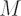
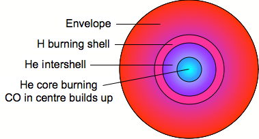
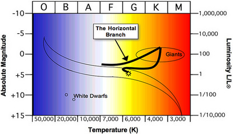

This is a phase of stellar evolution undergone by intermediate-mass stars, i.e. those with masses 0.8 M⊙ <

< 8 M⊙, a range which encompasses the majority of stars in the Galaxy, including our Sun. After departing the Main Sequence, these stars spend time on the Red Giant Branch, a phase characterised by hydrogen burning in a shell around the stellar core which causes their atmospheres to expand. The product of the hydrogen shell-burning is helium, which is deposited in the core, causing it’s temperature to rise until it is sufficient to trigger the triple alpha process. In this process, three helium nuclei (or ‘alpha particles’) fuse together to form carbon-12. Oxygen-16 is formed if another helium nucleus fuses with this. The commencement of this helium fusion in the stellar core is known as the helium flash and causes the temperature to increase while the radius decreases, thus the luminosity remains constant. The constant luminosity and increasing temperature means that the star moves to the left, roughly horizontally, across the Hertzsprung-Russell diagram, and hence stars in this phase are known as Horizonal Branch stars.

Schematic of the structure of a star on the Horizontal Branch of the Hertzsprung-Russell diagram.

The Horizontal Branch of the Hertzsprung-Russell diagram.